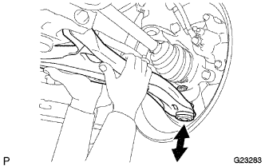

Front suspension Lower arm No.1 LH inspection |
| 1. Front suspension arm SUB-ASSY LWR No.1 LH inspection |
Jack up the front of the vehicle.
|  |
Sprinkle up and down the rower arm with the power of the hand (294N {30kgf} or more) to confirm that the ball joint has no rattling.
| 2. Front suspension arm SUB-ASSY LWR No.1 LH inspection |
Ball joint rotation condition inspection
 |
Attach the nut to the joint, make the stud 5 round trips in the direction of the light moving direction, and rotate continuously at the speed of 3-5 seconds/rotation, and measure the rotation torque in the fifth rotation.
Dust cover inspection
Inspect that the dust cover has no cracks and grease leakage.